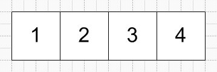
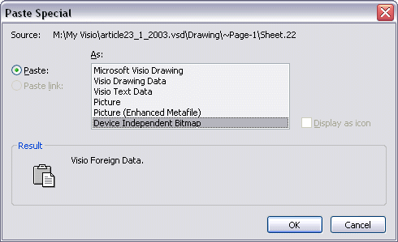
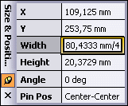
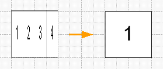
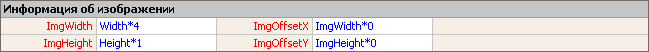
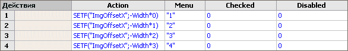
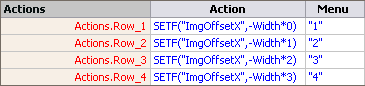
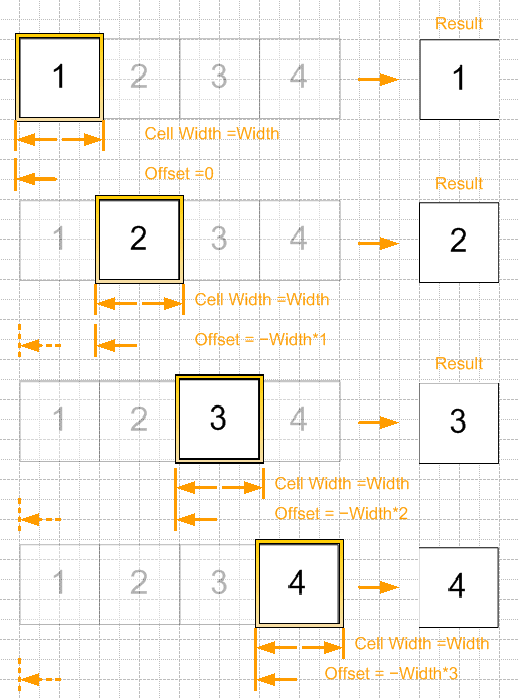
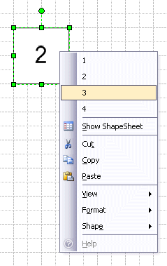

Raster multishapes in Visio.
 Besides vector multishapes, i.e. shapes that containing some shapes simultaneously, manipulations with the maintenance are possible and with raster images. But creation and work with such shape differs from how it is done with vector multishapes a little.
Besides vector multishapes, i.e. shapes that containing some shapes simultaneously, manipulations with the maintenance are possible and with raster images. But creation and work with such shape differs from how it is done with vector multishapes a little.
In general, what for multishapes are necessary? They represent a walking folder with objects, it is possible to compare still them to a stencil which contains shapes on one theme and one size, that basically, near to true.
Raster multishapes represent the big image, but the user sees only a small part of this image, and other part of the image is cut off, i.e. approximately too most. Which part of the image at present to display, cells ImgOffsetX answer and ImgOffsetY the Information on the image (Foreign Image Info).
Let's create a graphic element. For this purpose we shall draw some squares beside and inside we shall write numbers.

Now convert shapes to group, copy to clipboard and it is inserted by a insert special as the hardware-independent image.

Then it is necessary to reduce width of the image in that quantity of times, it consists of what quantity of elements. The given figure consists of 4 elements, therefore into the formula of a Size & Position window enter value of width to divide on 4.

The image now was narrowed. It is necessary to specify to the program, that real length of the image much more to displayed area.

For this purpose it is opened ShapeSheet and in section the Information on the image (Foreign Image Info) in cell ImgWidth it is entered =Width*4, the image after that became normal.

Further it is possible for any of convenient ways to make the tool of change of the image for a figure, whether it be cells of the user, other cells or the menu for a choice of the image. We shall consider last, as the most evident. For this purpose we create section of Actions and it is entered corresponding formulas.
For Visio 2000, 2002.

Cells of column Menu on the displayed number.
In cell Actions.Row_1
For Visio 2000, Visio 2002
Value =SETF("ImgOffsetX";-Width*0)
For Visio 2003

For Visio 2003
Value =SETF("ImgOffsetX",-Width*0)
In cell Actions.Row_2
For Visio 2000, Visio 2002
Value =SETF("ImgOffsetX";-Width*1)
For Visio 2003
Value =SETF("ImgOffsetX",-Width*1)
In cell Actions.Row_3
For Visio 2000, Visio 2002
Value =SETF("ImgOffsetX";-Width*2)
For Visio 2003
Value =SETF("ImgOffsetX",-Width*2)
In cell Actions.Row_4
For Visio 2000, Visio 2002
Value =SETF("ImgOffsetX";-Width*3)
For Visio 2003
Value =SETF("ImgOffsetX",-Width*3)
I.e. actually we specify the formula relative displacement of the displayed image from the beginning of coordinates of the shape.

That's all. Now changing items of the menu, corresponding images will be displayed.

Examples from article
Articles page
Previous article
Next article
Author: Nichkov Alexey (a.k.a. Digitall)